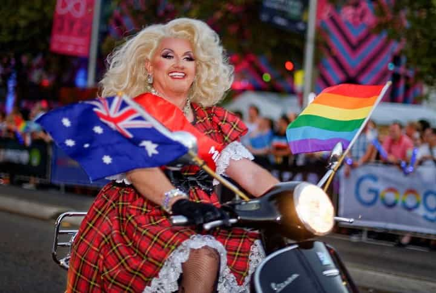

Hamish got sick of the overpriced feminazi cesspools of Australia and New Zealand and has been enjoying much greater personal freedom, respect for being a man, and the company of much more attractive, kind, and feminine women elsewhere.


We’ve talked before about the many reasons how Australia is degenerating into a SJW paradise. Let’s review 20 of them.
…which routinely resorts to subterfuge or outright lies in order to advance the feminist and progressive agenda, dominating the national discourse. Fact checking and truth reporting are either complete afterthoughts or are non-existent altogether.
People like Roosh can post article after article after article confirming that he is neither a “men’s rights activist,” nor advocates rape on private property (it was a thought experiment), and the Australian media genuinely won’t care.
Q: “Why do you want to legalize rape?”
I don’t. Legalizing rape is a notion so insanely absurd I never imagined that people would take it 100% seriously, including politicians. I don’t believe any form of physical violence against men or women should be legalized. I’ve said that “How To Stop Rape” was a satirical thought experiment so many times that it’s clear to me current misinterpretation of it by the media is deliberate. – Roosh V
Lies, damn lies, and emotional manipulation
The feminist Australian media will quickly resort to witch-hunting of white male public figures within their own country, if they dare to not march lockstep with the social justice narrative.
Using the expected straw man and appeal to emotion fallacies, the media lambasted the conservative Australian senator Cory Bernardi for re-tweeting an intellectually insightful article from Roosh, which was laughably deemed both irresponsible and “dangerous“.
If you speak up for common sense in Australia, you will be shunned
Australia is one of the most over-regulated countries in the world, which makes the cost of starting and running a business enterprise, and ultimately the goods and services they provide, astronomically high.
what….a….friggin…..HEADACHE
Australia takes a false sense of egalitarian pride in the “high” minimum wage of slightly over $17 AUD per hour ($12.75 US at 75 cent exchange rate). This is despite the fact that sticker prices of goods and services are often more than twice that of the equivalent product in the United States.
That $4.97 whole chicken at a U.S. Sam’s Club will be in the vicinity of $15 in Australia, and that 99 cent candy bar in the U.S. will be $2.50 or more in Australia. A pint of beer at the local pub can be more than $10. So what difference does it make?
This maybe still gets you a pint down at the local pub
Australia has a peculiar habit of sending swarms of its most boorish and aggressive young men on lengthy backpacking trips across southeast Asia, Latin America, and Europe every year.
These traits are often greatly at odds with the personalities of most other backpacker nationalities, who are often far more mellow, respectful, and inclusive of people from different cliques. If a fight ever breaks out at a popular backpacker bar, or somebody is ejected from a hostel for belligerent behavior, chances are it was probably an Australian. The “Ugly American” stereotype honestly needs to be handed over to these guys.
ye wanna fight ya cunt!?
Melbourne is laughably lauded as the “world’s most livable city” when in fact it’s anything but. With one of the world’s most wildly overpriced property and housing markets, $500,000 may not even get you a simple bungalow with a sand-box sized yard in a neighborhood which may be many kilometers away from the CBD or a beach.
The unspectacular weather, bland beaches, rip-off restaurants, snobby women, and rampant social justice environment means that men with financial resilience and the means to escape should go somewhere abroad which is “less livable” (more livable).
Melbourne. It appears nice but…
Australia boasts kindness-is-mistaken-for-weakness “dating” culture where men, whether local or foreign, who behave rationally, calmly, and with good manners may be unduly punished into an almost sexless existence in their youth.
Australian women like to sleep with obnoxious and aloof bad boys while in their late teenage and 20-something prime at a rate which is even noticeably higher than their North American counterparts.
With few exceptions, we’ll only sleep with aloof jerks while we’re under 27!
Australian women are often rude, snobby, condescending, dismissive, feminist, degenerate, career obsessed, and travel obsessed to the point of completely forgoing family formation in huge numbers.
Women who have backpacked extensively around the world in their 20’s often have notch counts beyond the half century mark and are highly unlikely to be able to pair bond well with a single man who could be husband and father material.
The unmarried and childless former Prime Minister of ‘Straya
Australian men, tired of both the poor quality of local women, their sky-high expectations, and sensing that a marriage with them would be doomed from the start, are among the world’s highest takers of foreign-born brides per capita in the world.
Brazilian, Colombian, Polish, Russian, Japanese, Vietnamese, or Filipina ladies often blow Australian women completely out of the water in regards to their looks, attitudes, femininity, and overall positive relationship qualities.
What’s on offer in 2010’s ‘Straya
It’s not the fault of human beings, but a few hidden gems aside, interior Australia is a barren and unattractive place where the natural beauty simply cannot compare to the national park systems of the U.S., Canada, central Europe, or neighboring New Zealand.
Fancy spending $1,000 or more on return flights, road transportation, accommodation, and heavily price-inflated food in order to see a big rock?

Lack of a similar equivalent to the U.S. 4th amendment (the right of the people to be secure against unreasonable searches and seizures without probable cause that a crime has been committed) means that Australian drivers are regularly subjected to state encroachment and police harassment.
Guilty-until-proven-innocent breathalyzer checkpoints and shanking operations to fine drivers for slightly expired registrations or warrant-of-fitness stickers are the norm.
Americans can be proud they do not have to be subjected to this
Australia has a degenerate-friendly police force where butt ugly and visible tattoos are no barrier to being hired. This sets an extremely poor example to young people and creates an outright unprofessional appearance for one of the world’s highest paid law enforcement entities.
Another day, another no-refusal breathalyzer checkpoint by a scumbag Aussie cop
Incessant sun exposure creates arguably the most prematurely aged looking population of all Western nations, especially in the state of Queensland.
Many Australians tend to have a very ambivalent attitude towards American tourists (minus attractive young females), and will casually refer to all of them by the irritating term “Yanks”, even if they are from the Deep South (translation: not yankees).
So what do Australians get for all this tepid treatment and cultural ignorance when they come to the US? Routinely being treated like rock stars everywhere they go, all the while completely stiffing U.S. service workers who rely almost entirely on tips to supplement their starvation wages.
The poor attitude far too many Aussies take in the U.S.
Flamboyant homosexuals and transgenders are openly embraced and “celebrated” at the Sydney Mardi Gras, in full public view of children who don’t yet understand the nature of human sex and what is supposed to be common and decent.

Australia is a nation where disrespectful and unprofessional women can make snide, embarrassing, and humiliating remarks to male coworkers on a television newscast and suffer no serious consequences from HR, feminists, or social justice warriors.
Over-the-top diversity laws and entirely pro-female human resource departments are making office environments increasingly hostile places for white Australian men to work. Male office workers are increasingly finding out they have to be careful with everything they say and do, or else face the wrath of HR.
Australia is a country where women’s interests and concerns are elevated to almost demigod status, while men’s problems are routinely brushed aside as non-issues. The large numbers of homeless men in the capital cities can just crawl into a gutter and die for all they care.
Melbourne – The world’s most livable city (for women)
Shaming a specific gender in public is completely acceptable. That is, only if the ridicule and scorn is directed against “cisgender” males.
Melbourne looks like such a great place for men doesn’t it? 🙂
It’s not just subtle like it is in many other countries, it’s literally in your face. This picture was captured outside Melbourne’s Etihad Stadium in August 2014, where the advertisements are insinuating that multicultural “programs” will build better neighborhoods (because nearly all-white Australian neighborhoods are such horrendous places to live), and that these de-whitened neighborhoods should of course be “celebrated”.

When you consider these points, Australia no longer seems like such a desirable place to travel or live. At least, not if you’re a masculine man.